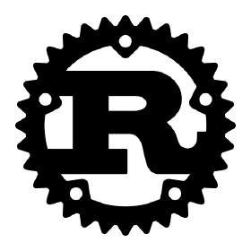

História da linguagem Rust
Origens e Motivação Inicial
Rust foi criada por Graydon Hoare, enquanto trabalhava na Mozilla, no ano de 2006. A motivação por trás do desenvolvimento desta linguagem de programação era desenvolver uma linguagem que oferecesse alto nível de segurança de memória, rica checagem de tipos e suporte à concorrência, sem a necessidade de um coletor de lixo. A linguagem foi projetada tendo em vista uma crescente necessidade de uma alternativa sólida e eficiente às tradicionais linguagens de sistemas, como C e C++.
Rust incorporou influências de linguagens funcionais, incluindo conceitos como a imutabilidade e as funções de alta ordem, além de tipos algébricos complexos (como a lista individualmente ligada). Estes conceitos integrados são de extrema importância para a linguagem, já que promovem práticas de programação que evitam erros comuns em outras linguagens.
Lançamento e Primeiras Versões
O primeiro anúncio público de Rust ocorreu em 2010, destacando a linguagem como uma solução para a programação de sistemas, com foco em segurança, concorrência e performance.
A partir de 2011, o projeto começou a ganhar popularidade e atrair a atenção da comunidade de desenvolvedores, devido à sua proposta inovadora. Eventualmente, em 2015, a linguagem atingiu um marco importante: o lançamento de sua versão 1.0, que comprovou sua maturidade e estabilidade para produção.
Desde sua versão inicial, Rust passou por várias iterações e melhorias significativas. Recursos como o sistema de tipos avançado, o sistema de propriedade e empréstimos (ownership e borrowing) e o lifetime checker foram desenvolvidos para garantir segurança e prevenir erros relacionados à memória.
Versões Recentes e Evolução
Atualmente, a linguagem continua evoluindo, com uma comunidade crescente e ativa e um ciclo de desenvolvimento regular, com o lançamento frequente de novas versões e melhorias. O ecossistema de Rust está em frequente expansão, com direito a adição de novas ferramentas como o Cargo (gerenciador de pacotes), além de uma vasta gama de bibliotecas e funcionalidades disponíveis para desenvolvedores.
A linguagem tem sido adotada em uma variedade de aplicações, desde o desenvolvimento de sistemas operacionais até a criação de aplicativos para a web. Rust se destaca por sua capacidade de oferecer bons índices de desempenho e confiabilidade, consolidando sua posição como linguagem de escolha para projetos que exigem tais características.
Além disso, Rust é suportada por uma comunidade engajada, contando com o respaldo de grandes empresas, organizações e desenvolvedores de destaque, o que contribui com sua contínua evolução e amplia a possibilidade de suas aplicações no contexto do desenvolvimento de software.
